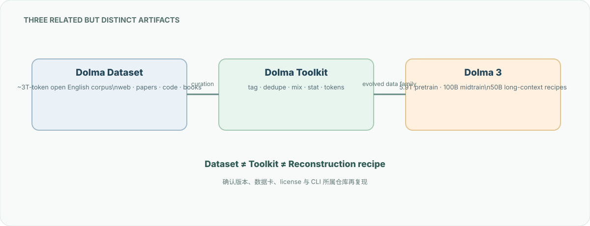
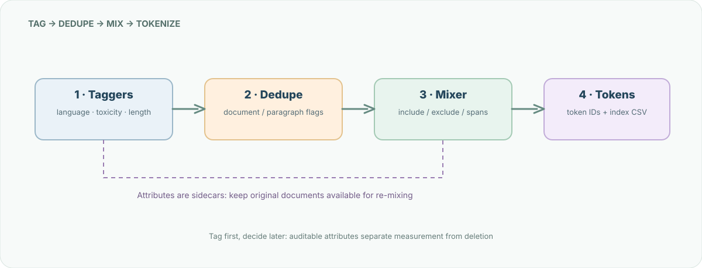
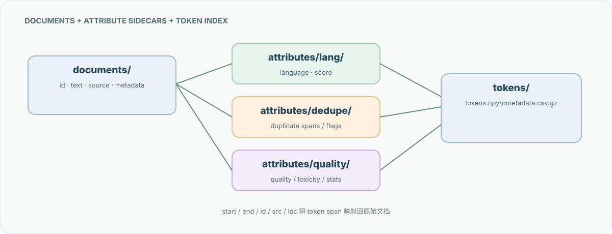

MODULE 24 / LLM DATA ENGINEERING
Dolma 工具链全解析
区分开放语料与工具包，深入 Tagger、Bloom Filter、Mixer、Tokenization，并追踪 Dolma 3 数据家族的演进。
Dolma 经常同时指一个开放预训练语料和一套数据整理工具。它们相关，但不是同一个东西。本章先拆清 dataset 与 toolkit，再从文档格式、tagger sidecar、Bloom Filter 去重、mixer、tokenization 追踪一条真实的数据整理路径，最后补充 2025–2026 年 Dolma 3 家族的演进。
先拆开两个 Dolma：数据集与工具包

| 名称 | 是什么 | 关键定位 |
|---|---|---|
| Dolma Dataset（原始家族） | 面向 OLMo 训练的开放英文语料 | ACL 2024 论文介绍约 3T tokens，多源包含网页、科学论文、代码、书籍、社交媒体和百科。 |
| Dolma Toolkit | 可扩展的数据整理工具包 | Python 库与 dolma CLI，支持 tagging、dedupe、mix、stats、tokens。 |
| Dolma 3 | OLMo 3 家族的数据集与重建配方 | 官方仓库描述 5.9T 预训练、100B mid-training、50B long-context 三类数据集。 |
Dolma 论文（ACL 2024）强调开放语料、构建过程文档和工具链透明度。官方 allenai/dolma 仓库同时包含原始数据集说明和 Dolma Toolkit 源码。当前 AI2 文档把 Dolma 3 描述为最新数据版本，并指出它用于 OLMo 3。
pip install dolma 安装的是原始 Dolma Toolkit 的 Python / CLI 工具；allenai/dolma3 是 Dolma 3 数据集及重建配方仓库，不等于旧 CLI 的一个新命令。Toolkit 的四段式整理流程

- Tag：给文档或文本 span 打标签，例如语言、毒性、困惑度、长度、随机 split 标识。
- Dedupe：按文档 key 或段落内容产生重复属性；它可以是文档级，也可以是段落级。
- Mix：读取文档与属性 sidecar，按 JSONPath include / exclude 条件筛选，必要时做 span replacement，并将多个 stream 合并。
- Tokens：使用 Hugging Face-compatible tokenizer，将保留的文本转换为 token IDs 与文档索引元数据。
关键架构是 先标记，再决定是否删除。Tagger 输出属性文件，不直接改写原始文档；Mixer 在之后读取属性并应用策略。这样可以复用同一批标签比较不同筛选规则，也可以保存被过滤样本的原因。
Dolma Document 与属性 sidecar

官方数据格式要求每条文档至少有：
{
"id": "source-specific-document-id",
"text": "document body",
"source": "common-crawl",
"added": "2024-01-01T00:00:00Z",
"created": "2023-12-20T00:00:00Z",
"metadata": {
"url": "https://example.org/article",
"language": "en"
}
}id、text、source 是核心字段；added、created 与 metadata 是可选字段。实际字段要与来源和 data card 对齐，不应为了通过 schema 而虚构时间戳或 source。
Tagger / deduper 将结果写到 attributes/<attribute-name>，并尽量保持与 documents 对应的目录结构和文件名。这个约定使同一个文档文件可以与多个属性文件稳定对齐。
Bloom Filter 去重：快，但不是零误差
Dolma 的 dedupe 命令可按文档 key 或段落内容做标记，底层使用内存 Bloom Filter。Bloom Filter 用位数组与多个哈希函数表达“某元素可能出现过”；它允许 false positive（把未出现的项目误判为可能存在），但在标准插入/查询模型下不会因为空间不足而产生 false negative。
是预计插入元素数， 是目标 false-positive rate， 是位数组位数， 是哈希函数数。这个经典近似可用于规划内存；具体实现的哈希、持久化和并发行为仍要看所用版本。
Dolma 文档的示例使用 estimated_doc_count 和 desired_false_positive_rate 配置 Bloom Filter，并把重复段落位置写成属性；随后由 mix 决定是否移除。不要把“可能重复”误说成精确重复证明。
Mixer 与 Tokenizer：从标签决策到训练文件
dolma mix 可以组合多个 streams，合并指定属性，使用 JSONPath include / exclude 条件筛选文档，也能按带分数的 span 替换文本。它更像一个可配置的“物化视图”步骤：原文与属性不变，输出一个新的 curated corpus。
dolma tokens 使用兼容的 tokenizer。官方文档描述输出包括：
.npy：拼接后的 token ID 数组；.csv.gz：每段 token 的索引元数据，包含start、end、id、src和loc。
索引文件让训练端能够从连续 token 数组追溯回原始文档 ID、源文件路径和行位置。若只保留 token IDs 而丢掉这些映射，后续数据审计、去污染和删除请求都会更困难。
# 典型 CLI 流程（路径和配置需替换为自己的数据）
dolma tag --documents "data/v0/documents/*.json.gz" \
--taggers random_number_v1 char_length_with_paragraphs_v1 \
--experiment audit --processes 8
dolma dedupe --documents "data/v0/documents/*.json.gz" \
--dedupe.paragraphs.attribute_name bff_duplicate_paragraph_spans \
--bloom_filter.file /tmp/dolma_bloom_filter.bin \
--no-bloom_filter.read_only \
--bloom_filter.estimated_doc_count 6000000 \
--bloom_filter.desired_false_positive_rate 0.0001 \
--processes 8
dolma -c config/mixer.yaml mix --processes 8
dolma tokens --documents "data/curated/documents/*.gz" \
--tokenizer.name_or_path "your-pinned-tokenizer" \
--destination "data/curated/tokens" --processes 8Dolma 3：从公开语料走向可重建的数据配方
截至当前官方仓库，Dolma 3 描述了三个面向 OLMo 3 的数据集合：Dolma 3 Mix（约 5.9T tokens 的预训练 mix）、Dolma 3 Dolmino Mix（约 100B tokens 的 mid-training 数据，面向数学、代码、QA、指令与思考能力）、Dolma 3 Longmino Mix（约 50B tokens 的长上下文数据）。这些规模是仓库当前 README 对数据集的描述，不应与原始 Dolma 3T 语料或 OLMo3 技术报告中其他阶段的 token 统计混为一谈。
Dolma 3 仓库主要公开数据集说明与重建配方；OLMo 3 技术报告还提到 datamap-rs、duplodocus 和 dolma3 等数据处理 / 去重 / 配方组件。这说明大规模数据系统会随版本演进，阅读时应先确认你在看的是哪一代 dataset、toolkit、recipe 与 license。
交互实验：Bloom Filter 需要多少内存？
按标准 Bloom Filter 近似公式估算位数组大小与哈希函数数。该结果不等于 Dolma 实际运行时的全部内存；还未包括对象、索引、缓冲区与进程开销。
# scripts/dolma_bloom.py
from scripts.dolma_bloom import bloom_filter_size
print(bloom_filter_size(6_000_000, 0.0001))参考资料
- Soldaini et al. (2024), Dolma: an Open Corpus of Three Trillion Tokens for Language Model Pretraining Research，ACL 2024。
- allenai/dolma：原始 Dolma Dataset 与 Toolkit。
- Dolma Toolkit docs：Getting Started、Data Format、Taggers、Deduplication、Mixer、Tokenization。
- AI2 Dolma documentation：当前 Dolma / Dolma 3 版本说明。
- allenai/dolma3：Dolma 3 datasets 与 reconstruction recipes。
- OLMo 3 Technical Report：Dolma 3 Mix、数据阶段与工具链说明。